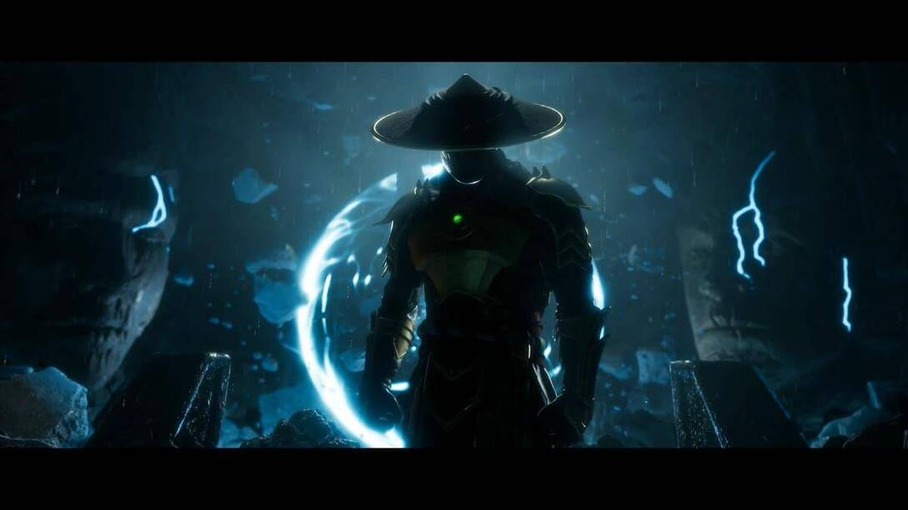
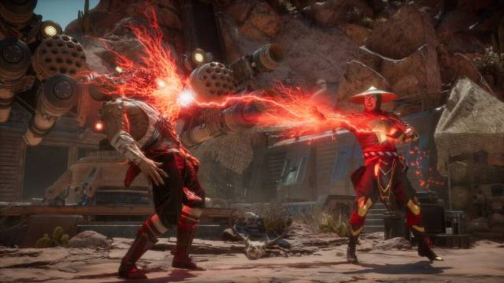

Mortal Kombat 11

- 
- 
Continúa la legendaria saga de más de 25 años con una nueva historia cinemática. Los jugadores podrán jugar con una gran variedad de personajes del pasado y el presente en una nueva historia que desafía al tiempo para enfrentar a Raiden contra Kronika, el Guardián del Tiempo que creó la existencia en los albores de la historia.
Ofrece opciones de personalización casi ilimitadas, con las que el jugador dispondrá de más control y podrá disfrutar de una experiencia más profunda y personalizada. El jugador podrá personalizar a sus luchadores con una gran variedad de trajes, equipamiento, habilidades especiales, vídeos de presentación y victoria, burlas y brutalidades que se podrán conseguir jugando.
Elige de entre una lista de luchadores con sus propias habilidades y fatalities, con nuevos personajes como Geras, un poderoso y leal sirviente de Kronika capaz de manipular el tiempo, y personajes tan queridos como Baraka, Raiden, Skarlet, Scorpion, Sonya Blade, Sub-Zero y muchos más.